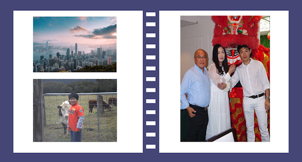

Check out my past and my experiences with HSC, work and computers!
I was born in Hong Kong before coming here to Australia when I was about 3 years old. My Dad is Hong Kong and my Mum is Indonesian Chinese. I don't have any siblings and my relatives are either in Hong Kong or Indonesia. So it's only the three of us.
I completed the HSC in 2019. I studied Business Studies, Chinese Continuers, Software Design and Development, Maths Advanced and English Advanced. My favourite subjects were actually Business Studies and Chinese!
I would say I have a basic level of computing experience. I can fix most of the computer issues my parents have and I've studied IT subjects in highschool such as IST and SDD. I've also played around with some projects before related to web development and games. But there's still a lot to learn!
Throughout the last two years of highschool I've had some experience. I had a casual job at McDonald's and then found another job as a restaurant waiter. I've also recently got a job as a tutor so that's exciting!